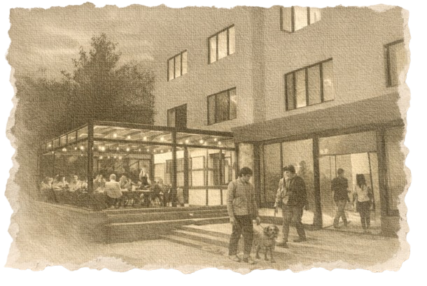

ARCHITEKTURA &
VIZUALIZACE
I TEN NEJMENŠÍ DETAIL V SOBĚ UKRÝVÁ VLASTNÍ A NEPŘEBERNĚ PESTRÝ VESMÍR

Pracuji samostatně jako architekt a autorizovaný inženýr ČKAIT, avšak se zázemím mnoha profesionálních projekčních subdodavatelů. Specializuji se spíše na menší projekty, často s komplikovaným projednáváním. Fandím alternativním i úsporným formám bydlení a nebojím se v tomto směru rozvíjet a přijímat nové myšlenky.
Těm, kteří potřebují z nějakého důvodu snížit cenovou hranici za projekční páce, umožňuji spoluúčasti na projektu v mezích, které jsou pro ně zvládnutelné (například vlastní zaměření či digitalizace). Preferuji mít se stavebníkem společný záměr, nikoliv představovat nezbytné zlo, které stojí na cestě k realizaci určitého záměru.
Praxe:
- 2022 samostatná projekční praxe
- 2020 (trvá) spolupráce se společností SUN SYSTEM (ČR, SR)
- 2022-2014 činnost pro Archispace s.r.o., Praha
- 2008-2013 spolupráce s Meridin s.r.o., Hradec Králové
- 2008 Autorizace, ČKAIT, obor: IP00 – pozemní stavby
- 2007-2008 P&P Servis, stavební společnost s.r.o., Praha
- 2003-2007 ASGK Design s.r.o. (dříve Escadra architekti), Praha
Vzdělání:
- 2004-2007 České vysoké učení technické v Praze, Fakulta stavební (doktorské studium)
- 1996-2004 České vysoké učení technické v Praze, Fakulta architektury (inženýrské studium)
Stáže:
- 2006 Institut für Gebäudelehre und Entwerfen (Sozial- und Gesundheitsbauten), Fakultät Architektur, TU Dresden (stáž-doktorské studium)
- 2001 Kansas State University, KS, USA, Katedra architektury (stáž-inženýrské studium)
Ostatní:
- 3D vizualizace pergol a plotů pro společnost SUN SYSTEM: „Díky profesionální 3D vizualizaci pergol a plotů si vyberete to pravé“
- Kniha „Sociálně ekonomické aspekty typologie hospicových domů„, autor Naděžda Malkovská ; ed. Jana Šafránková, vydalo České vysoké učení technické v Praze, 2007, ISBN 978-80-01-03800-0
- Disertační práce „Sociálně ekonomické aspekty typologie hospicových domů„, Fakulta stavební ČVUT, Praha 2007
- BYDLENÍ (nejen) pro lidi se zdravotním postižením;
Publikace byla vytvořena Národním centrem podpory transformace sociálních služeb v rámci projektu Ministerstva práce a sociálních věcí ČR Podpora transformace sociálních služeb. Činnost Národního centra podpory transformace sociálních služeb zajistila firma 3P Consulting s.r.o.Autorský kolektiv: Doc. Ing. arch. Irena Šestáková, Ing. arch. Naďa Francová, Ph.D., Mgr. Jiří Sobek, Mgr. Jitka Procházková, 1. vydání 2012